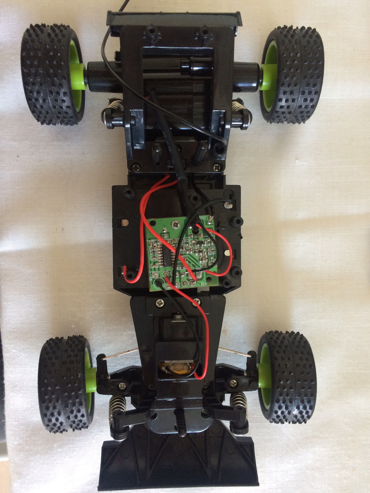
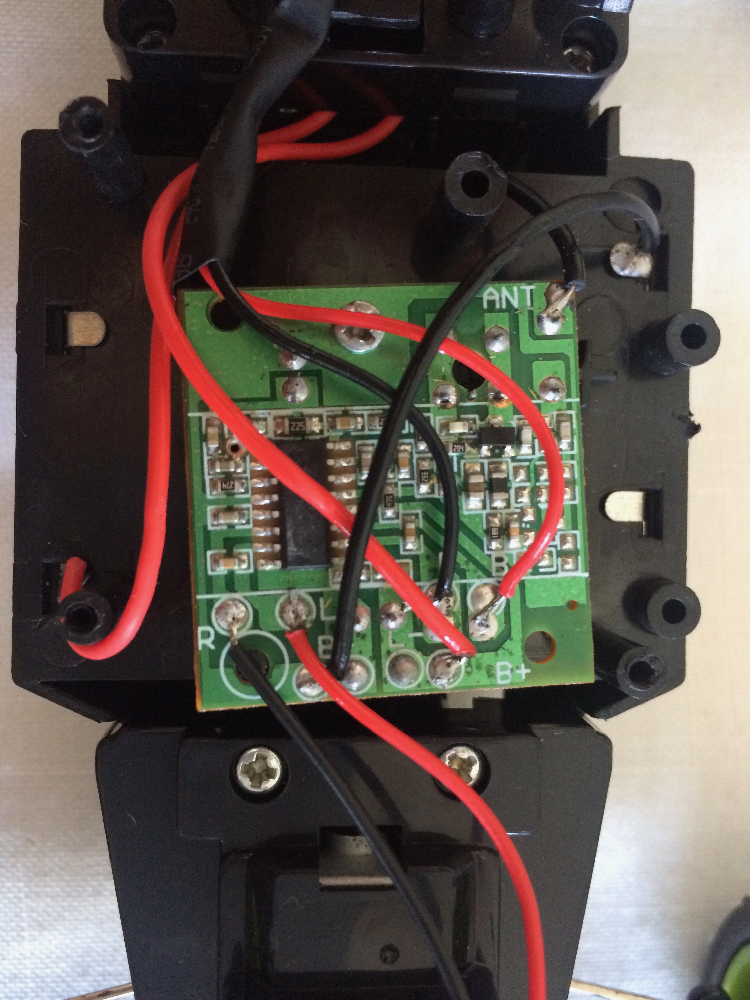
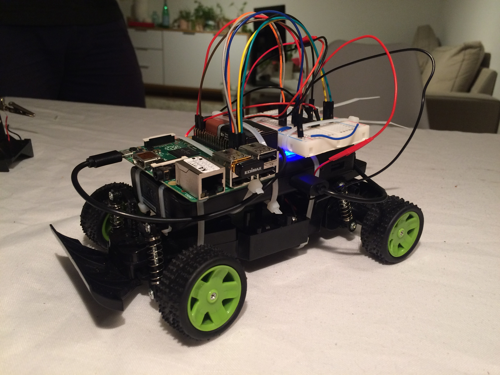
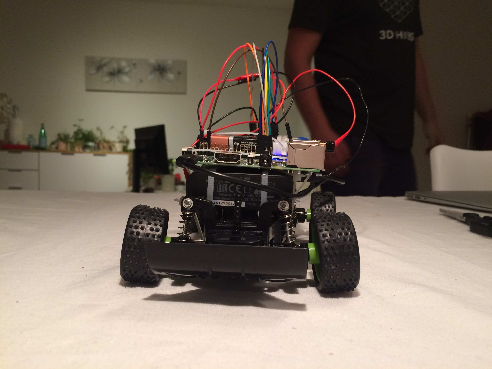
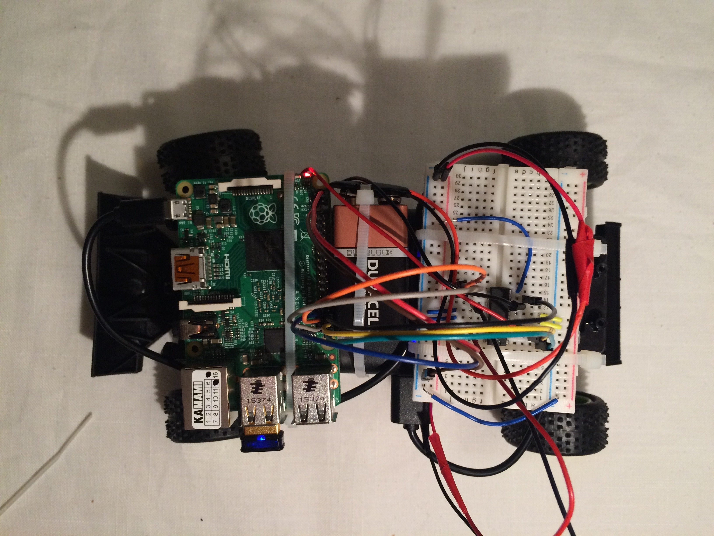
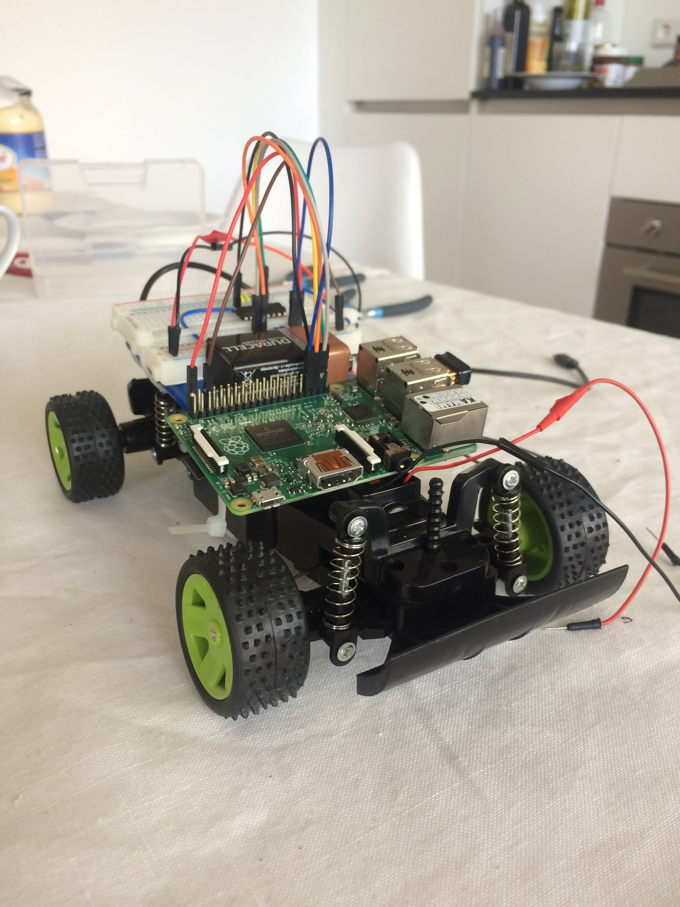
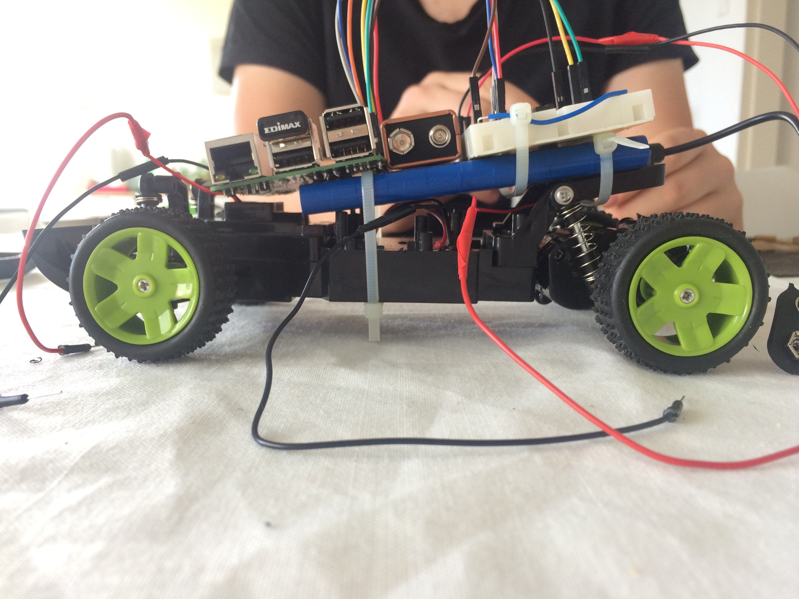
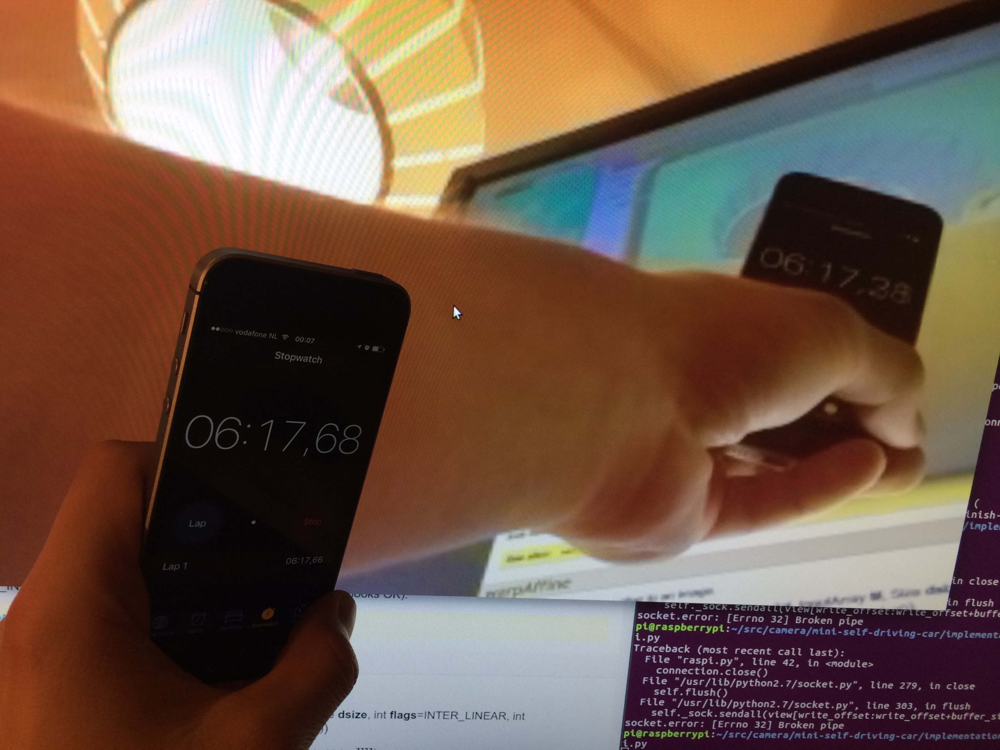

Mike Garmulewicz
--------------------------------------------------
How to build small self driving car?
My recent side project is a small self driving car.
Idea
A nice scheme how it workxx.
Draw on ipad.
Beginnings First car
Started the story with learning a bit about electronics.
Discovered a great book:
Make: electronics
.
and learned a little bit about basic electronics.

Bought a little green car, disassembled it completely.
I didn't understand too much about about how this stuff works, just bought
the cheapest one in Action.nl.
Deconstructed it looks like this.

Actually construction of it is really simple, there are two wires
going to battery, and two wires going to each engine front and back.

So I have figured, if I can control when electricty goes to the motor, I
can control motor. But it is not so easy, raspi can't run such
high power through pins. If you connect motor, it will damage raspi
You can buy motor controller for raspi or be thrifty, and implement own.
Followed
this tutorial
and it worked!
Actually it contains an error.
Read the chip factsheet, fixed the bug.
Construction
Implemented a basic remote control system that sends driving command
over TCP socket.
Not sure about how much power Rpi needs, bought a really big power pack
for mobile phone.
When it comes to joining stuff together, a lot of ziptie engineering. Thanks roadkill!




Fail no - too heavy
That one was way 2 heavy. Bought a way lighter battery with less capactiy.
We were really lucky about the Pokemon Go craze, as it meant
a lot of cheap mobile battery packs.


Camera
A lot of trial and error.
First
https://github.com/hamuchiwa/AutoRCCar/blob/master/raspberryPi/stream_client.py

http://blog.davidsingleton.org/nnrccar/
Measuring latency takes both hands.
Remote control
Remote control
first tried TCP
then tried UDP
Second car
When I learned that the first one is too weak to transport all this weight,
bought second better one.
I learned at this point that some of more advanced RC cars use more
refined servo-style motor at front. These use PWM pulse width modulation
and need a special hardware controller.
Luckily this one was not that expensive, 20-30 euro so still has simplified
steering with linear engine driving the front whel
Remote control was too slow, fixed by buying faster intercae
Machine learning
Nvidia paper, Udacity
[IMG_4038.m4v]
Machine learning
### Lessons
* be patient
* need a lot of money